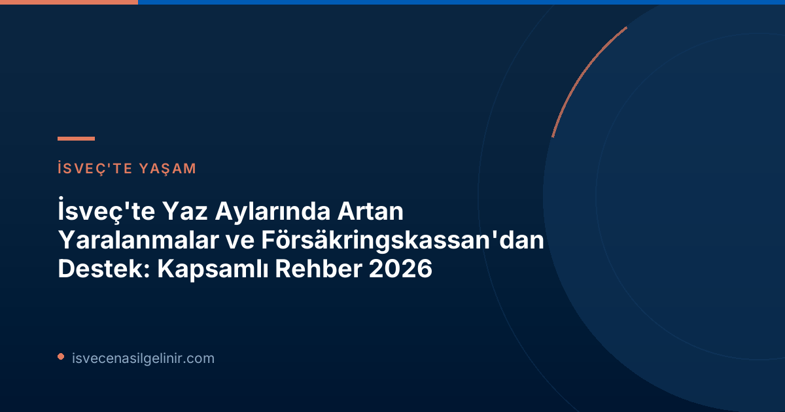

Yaz Aylarında Yaralanmalar Neden Artıyor? Försäkringskassan Analizi
Yaz mevsimiyle birlikte artan güneşli günler ve uzun tatil dönemleri, insanları kapalı alanlardan dışarıya, daha aktif bir yaşama teşvik ediyor. Ancak Försäkringskassan analistlerinden Ulrik Lidwall'ın belirttiği göre, birçok kişi kendi kapasitesini aşarak maalesef yaralanmalarla sonuçlanan kazalara karışıyor. Lidwall, "Hareket etmek ve dışarıda olmak elbette iyi, ancak istatistikler, birçok kişinin yeteneklerini hafife aldığını ve yaralandığını gösteriyor," diyor. Özellikle yaz tatillerinde yapılan, günlük rutinin dışındaki aktiviteler bu artışta büyük rol oynuyor. Tramplende zıplamak, dağlık arazilerde uzun yürüyüşlere çıkmak veya bahçe işleri ya da ev tadilatları gibi fiziksel olarak zorlayıcı işlerle uğraşmak, alışık olunmayan kas gruplarını kullanmayı gerektirebilir ve kazalara davetiye çıkarabilir.İsveç'te Hastalık İzni ve İş Göremezlik Ödenekleri: Bilmeniz Gerekenler
İsveç'te çalışan bir birey, hastalandığında veya yaralandığında belirli bir destek sistemine sahiptir. Bu sistem iki ana aşamadan oluşur:İsveç'te Hastalık İzni Süreçleri
- Sjuklön (Hastalık Maaşı): İşveren tarafından ödenir. Çalışanlar, hastalıklarının veya yaralanmalarının ilk 2 haftası boyunca işverenlerinden hastalık maaşı alır. Bu süre boyunca Försäkringskassan'a başvuru yapılmasına gerek yoktur.
- Sjukpenning (Hastalık Ödeneği): Försäkringskassan tarafından ödenir. İlk 2 haftalık sürenin sonunda, eğer iş göremezlik hali devam ediyorsa, çalışanlar Försäkringskassan'a başvurarak hastalık ödeneği talep edebilirler. Bu ödenek, kişinin gelir kaybını telafi etmeye yöneliktir.
Daha fazla bilgi ve başvuru süreçleri için İsveç Vatandaşlık Testi rehberlerini inceleyebilirsiniz.
Försäkringskassan İstatistikleriyle Yaz Dönemi Yaralanmaları (2025-2026)
Försäkringskassan'ın güncel istatistikleri, yaz dönemindeki yaralanma eğilimlerini net bir şekilde gözler önüne seriyor.| İstatistik Kalemi | Açıklama / Veri |
|---|---|
| Yıllık Toplam Başlayan Hastalık İzni Vakası | Yarım milyondan fazla |
| En Yaygın Tanı Grupları | Psikolojik rahatsızlıklar ve hareket sistemi hastalıkları (örn. sırt ağrısı) |
| Temmuz Ayında Başlayan Hastalık İzni Vakaları | Ocak ayının (en çok vakanın başladığı ay) yarısı kadar |
| Mayıs-Ağustos Döneminde Başlayan Yaralanma Kaynaklı Sağlık İzni Vakaları | Tüm yaralanma kaynaklı vakaların %35'i (örn. kol ve bacak kırıkları) |
| Yıllık Yaralanma Kaynaklı Başlayan Hastalık İzni Vakaları | Yaklaşık 60.000 |
| 2025 Yılında Yaralanma Kaynaklı Telafi Edilen Hastalık Gün Sayısı | 4.4 milyon gün |
| 2025 Yılında Hastalık Ödeneği Gideri (Yaralanma Kaynaklı) | 3.7 milyar SEK |
Yaz Tatilinde Güvenliğinizi İhmal Etmeyin! Öneriler
Yaz mevsiminin tadını çıkarırken sağlığınızı korumak için bazı basit ama etkili önlemler alabilirsiniz: * **Yeteneğinizi Abartmayın:** Yeni bir aktiviteye başlarken veya uzun süredir yapmadığınız bir şeyi yaparken kendi fiziksel sınırlarınızı doğru değerlendirin. Kendinizi zorlamayın. * **Doğru Ekipman Kullanımı:** Tramplen, bisiklet veya dağ yürüyüşü gibi aktiviteler için uygun koruyucu ekipman (kask, dizlik, bileklik vb.) kullandığınızdan emin olun. * **Isınma ve Soğuma:** Herhangi bir fiziksel aktiviteye başlamadan önce kaslarınızı ısıtın ve aktivite sonrası soğuma egzersizleri yapın. * **Dinlenmeye Zaman Ayırın:** Yoğun aktiviteler arasında vücudunuzun dinlenmesine fırsat tanıyın. Aşırı yorgunluk, kaza riskini artırır. * **Çocuklar İçin Güvenli Ortam:** Çocukların oynadığı alanlarda güvenlik önlemlerini artırın ve denetimi elden bırakmayın, özellikle tramplenler gibi potansiyel risk taşıyan yerlerde. Unutmayın, yaz tatilinizin keyfini tam anlamıyla çıkarmak için önce güvenliğinizi sağlamalısınız. Olası bir yaralanma durumunda İsveç'teki haklarınızı bilmek ve Försäkringskassan ile iletişime geçmek için bu rehberi aklınızda bulundurun.Referanslar:
- Försäkringskassan – Fler skadade under sommaren (Dofollow Link İşareti ↗)
İsveç'te Yaşam ve Göçmenlik Hakkında Daha Fazla Bilgi Edinin!
İsveç'te eğitim, çalışma, yaşam koşulları ve vatandaşlık süreçleri hakkında en güncel ve kapsamlı bilgilere ulaşmak için sitemizi ziyaret edin. Profesyonel danışmanlık hizmetlerimizle İsveç'e uyum sürecinizi kolaylaştırın.